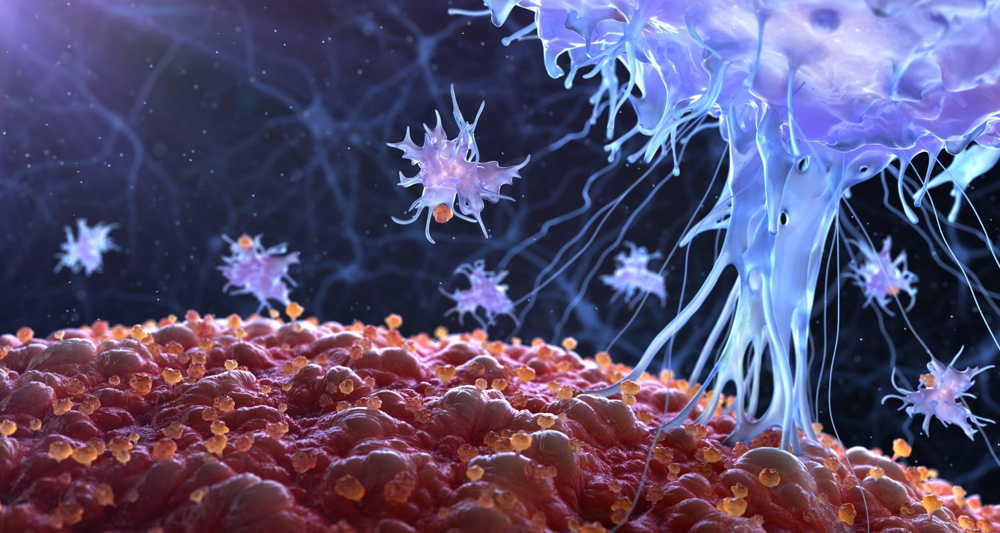
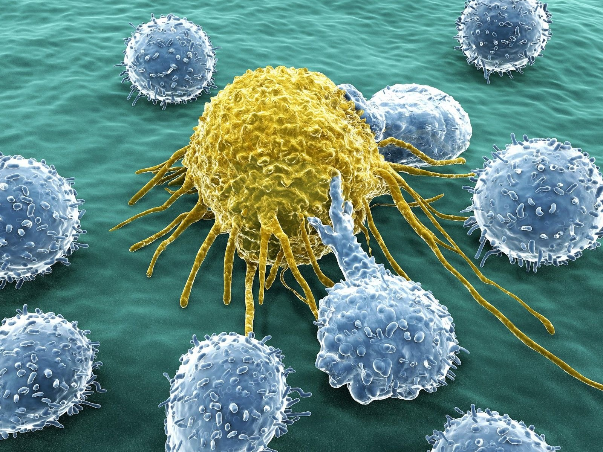

The immune system is the body's primary defense against pathogens and other diseases. It also consists of specific and nonspecific defenses against infection.
The skin is the most important nonspecific defense, because it is not directed against all infections. Instead, a nonspecific defense guards against all infections, regardless of their cause. Other nonspecific defenses are found in the mouth and respiratory passages, where millions of microorganisms enter everyday. Passages leading to the lungs are coated in muscus that traps airborne pathogens. Cells sweep these trapped cells into the digestive system, where they are destroyed by digestive enzymes. Other pathogens enter through the mouth, eyes and excretory system may be destoryed by lysozyme, an enzyme that breaks down cell walls of some bacteria.
Specific Defenses
The immune system is also capable of powerful specific defenses that produces immunity.
Immunity is the ability of the body to resist a specific pathogen. There are two kinds of immunity, which are: "antibody immunity" and "cell-mediated immunity".

The white blood in the human body are of the following below:

IMMUNE DISORDERS
Although the body's defense system protects the body against pathogens, sometimes disorders occur, which are as follows:
Allergies
An allergy is an overreaction of the immmune system to an antigen in the environment. An allergic reaction occurs when an antigen triggers a type of immune cell, called a mast cell, to release chemicals called histamines.
Histamines produe an "inflamatory resopnse", i.e a response that causes the skin to turn a "flaming red color", that includes sneezing, runny nose and itchy eyes.
Allergic reactions also creates a dangerous conditon called asthma, in which muscle contractions reduce the size of air passageway in the lungs, making breathing difficult.
Auto-Immune Diseases
These diseases are caused by the mistakes and attacks of the immune system on its own cells. Such diseases are:
We will talk about these diseases later on my next journal.
AIDS(Aquired Immune Deficiency Syndrome)
AIDS is a syndrome that significantly weakens the immune system, it is caused by a virus, called HIV, which means, Human Immunodeficiency Virus.